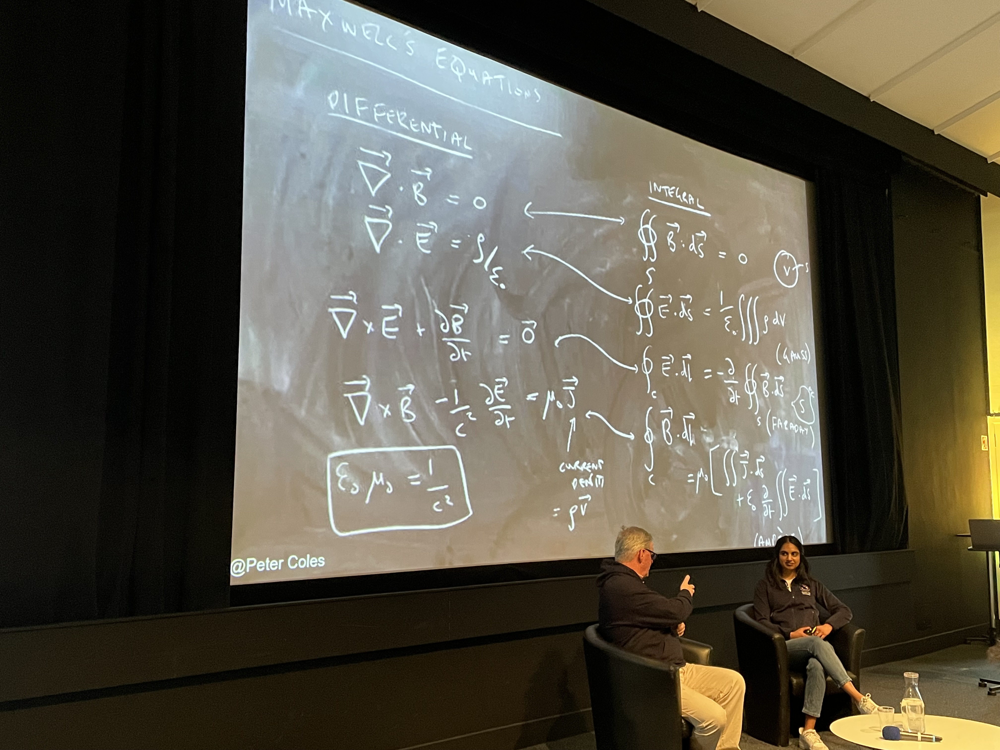

Outreach
Student Ambassador, James Clerk Maxwell Foundation
Seeing the Dark Universe, Edinburgh Pint of Science
Scotland's Einstein, Edinburgh Science Festival
Student Ambassador, James Clerk Maxwell Foundation
Seeing the Dark Universe, Edinburgh Pint of Science
Scotland's Einstein, Edinburgh Science Festival